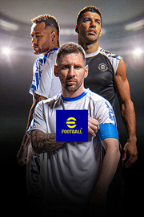

|  | |
| Tiempo de juego | No Jugado |
| Última actividad | Nunca |
| Añadido | 1/29/2025 14:44:06 |
| Modificado | 1/29/2025 14:48:03 |
| Estado de finalización | No Jugado |
| Librería | Playnite |
| Fuente | FREE TO PLAY |
| Plataforma | PC (Windows) |
| Fecha de lanzamiento | 9/29/2021 |
| Puntuación de la Comunidad | 47 |
| Puntuación de la Crítica | |
| Puntuación de usuario | |
| Género | Deportes Free to Play Simuladores |
| Desarrollador | Konami |
| Editor | Konami |
| Característica | Compat. Parcial Con Mando Compras Dentro De La Aplicación Coop. A Pantalla (Com)Partida Cooperativo Cooperativo En Línea Jcj Jcj A Pantalla (Com)Partida Jcj En Línea Multijugador Pantalla Partida/Compartida Un Jugador |
| Enlaces | Punto de encuentro Discusiones Guías Noticias Página de la tienda PCGamingWiki |
| Tag | Anime Comedia Cooperativos Cooperativos en línea Cooperativos locales Deportes Divertidos e-sports Free to Play Fútbol JcJ LGBTQ+ Memes Multijugador Multijugador local Para mando Realistas Simulación Un jugador Violentos |
■ "eFootball™" - Una evolución de "PES"
Estamos en una nueva era del fútbol virtual: "PES" ha evolucionado para convertirse en "eFootball™". ¡Disfruta ya de la nueva generación de juegos de fútbol con "eFootball™"!
■ Todos los recién llegados son bienvenidos
Tras descargar el juego, podrás aprender los controles básicos a través de un tutorial paso a paso que incluye demostraciones prácticas. ¡Complétalos todos para recibir a Lionel Messi!
[Formas de jugar]
■ Crea tu propio equipo ideal
Puedes elegir como equipo base entre una gran cantidad de equipos, incluidos prestigiosos clubes europeos como el FC Barcelona, el Manchester United, el FC Bayern München, el AC Milan y el Internazionale Milano. ¡También puedes elegir clubes de Sudamérica, clubes de la J.League o tu selección nacional favorita!
■ Ficha jugadores
Después de crear tu equipo, es el momento de hacer fichajes. ¡Desde superestrellas actuales a leyendas históricas, ficha jugadores y lleva a tu equipo a nuevas cotas!
・ Jugadores especiales
Aquí puedes fichar jugadores especiales, como futbolistas que hayan tenido grandes actuaciones en partidos reales, futbolistas de ligas destacadas y leyendas del deporte rey.
・ Jugadores normales
Aquí puedes fichar a los jugadores que tú elijas. Usando las funciones Ordenar y Filtrar podrás acotar tu búsqueda.
・ Directores técnicos
Aquí puedes fichar directores técnicos adecuados para todo tipo de planteamientos tácticos y con distintas compatibilidades.
■ Juega partidos
Una vez que hayas confeccionado un equipo con tus jugadores favoritos, será el momento de verlos en acción sobre el terreno de juego.
¡Ya sea poniendo a prueba tus habilidades frente a la IA o compitiendo por la mejor posición en el ranking de partidos en línea, disfruta de eFootball™ de la manera que más te guste!
・ Perfecciona tus habilidades en partidos contra la IA
Hay una gran diversidad de eventos que coinciden con el calendario futbolístico del mundo real, incluyendo un evento "Starter" para aquellos que están empezando y eventos en los que puedes jugar contra equipos de importantes ligas. ¡Confecciona un equipo ideal que se ajuste al tema de los eventos y participa!
・ Pon a prueba tu fortaleza en partidos de usuarios
Disfruta de la competición en tiempo real con la "Liga eFootball™", basada en divisiones, y con diversos eventos semanales. ¿Eres capaz de llevar a tu equipo ideal a lo más alto de la división 1?
・ Partidos de hasta 3 contra 3 con amigos
Usa la función Partido de amigos para jugar contra tus amigos. ¡Demuéstrales la pasta de la que está hecho tu equipo!
También están disponibles los partidos cooperativos de hasta 3 contra 3. ¡Júntate con tus amigos y disfruta de apasionantes enfrentamientos!
■ Desarrolla a los jugadores
Los jugadores fichados se pueden desarrollar aún más según el tipo de jugador.
Sube de nivel a tus jugadores poniéndolos a jugar partidos o usando "Programas de entrenamiento de nivel". ¡Usa después los puntos de progresión obtenidos y desarrolla a tus jugadores para amoldarlos a tu estilo de juego! Los programas de entrenamiento de nivel se pueden obtener participando en eventos.
Los puntos de progresión del jugador se asignarán automáticamente a categorías como [Disparo], [Regate] y [Defensa] de una forma que optimizará las estadísticas del jugador y maximizará su valoración general.
En caso de que prefieras personalizar al jugador para adaptarlo a tu gusto personal, tienes la opción de asignar los puntos de progresión manualmente.
Si tienes dudas sobre cómo desarrollar al jugador, puedes usar la función [Recomendado] para asignar automáticamente sus puntos.
¡Desarrolla a tus jugadores exactamente a tu gusto!
[Para una mayor diversión]
■ Actualizaciones en vivo semanales
Los datos de los partidos reales jugados en todo el mundo se recopilan semanalmente y se implementan en el juego a través de la función Actualización en vivo para crear una experiencia más auténtica. Estas actualizaciones afectan a varios aspectos del juego, incluidas la valoración de la forma física de los jugadores y las plantillas de los equipos.
*Los usuarios que residan en Bélgica no tendrán acceso a las cajas de botín que se compran con monedas de eFootball™.
*Puedes comprar monedas de eFootball™ en el juego y usarlas de diversas maneras, como para fichar jugadores seleccionados al azar o desbloquear Pases de partido.
*La descripción puede variar debido a futuras actualizaciones.